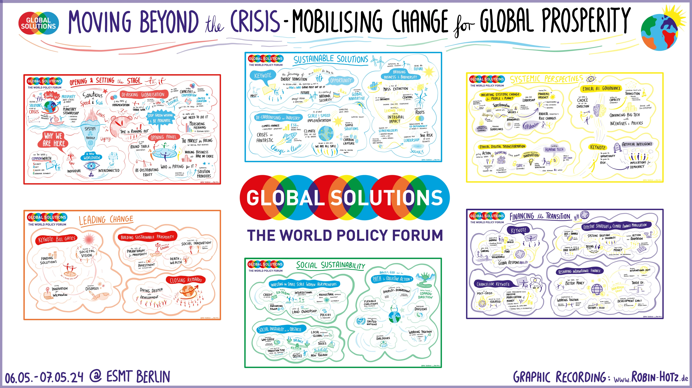
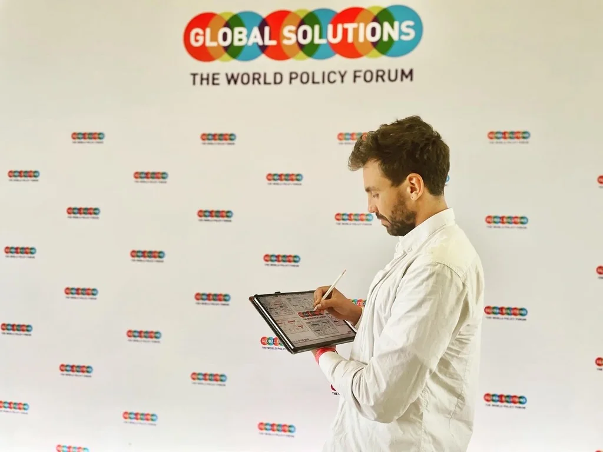
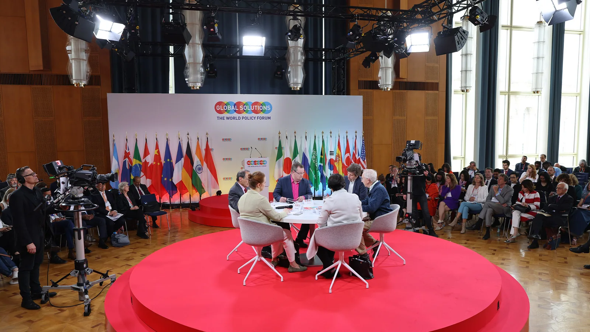

AusgangslageStarting point
Der Global Solutions Summit 2024 brachte an der ESMT Berlin Menschen aus Politik, Forschung und Praxis zusammen. Das Leitthema lautete „Moving Beyond the Crisis: Mobilizing Change for Global Prosperity“. Im Mittelpunkt standen Hindernisse für Veränderung und Wege zu einer systemischen Transformation.The Global Solutions Summit 2024 brought together people from policy, research and practice at ESMT Berlin. Its theme was “Moving Beyond the Crisis: Mobilizing Change for Global Prosperity”, with discussions exploring barriers to change and paths towards systemic transformation.
Im Programm waren unter anderem Bill Gates und Olaf Scholz, damals Bundeskanzler der Bundesrepublik Deutschland (SPD). Bei dieser Vielfalt an Themen und Stimmen war meine Aufgabe, wesentliche Aussagen und ihre Zusammenhänge sichtbar zu machen.The programme featured speakers including Bill Gates and Olaf Scholz, then Federal Chancellor of Germany (SPD). With so many topics and voices, my task was to make key messages and their connections visible.
Meine RolleMy role
Als Main Graphic Recorder war ich für die visuelle Verdichtung der Inhalte verantwortlich. Ich hörte den Beiträgen zu, wählte Kernaussagen aus und übersetzte sie live in eine Kombination aus Schrift, Bildern und Struktur.As main graphic recorder, I was responsible for the visual synthesis of the content. I listened to the contributions, selected key messages and translated them live into a combination of words, images and structure.
Dabei ging es um die Verbindungen zwischen den Beiträgen: Welche Gedanken greifen ineinander? Wo unterscheiden sich Perspektiven? Und welche Fragen bleiben offen? Das Gesamtbild macht diese Arbeit nachvollziehbar.I focused on connections between contributions: which ideas build on each other, where do perspectives differ and which questions remain open? The complete visual record makes that work visible.
ProzessProcess
Graphic Recording beginnt für mich mit Zuhören und Einordnen. Aus vielen einzelnen Aussagen entsteht nach und nach eine visuelle Struktur, die sowohl Details als auch das größere Bild zeigt.For me, graphic recording begins with listening and making sense of what is being said. Individual statements gradually become a visual structure that holds both the details and the bigger picture.
Live zuhören und verdichtenListening and synthesising live
Während der Beiträge hielt ich zentrale Gedanken fest und ordnete sie thematisch. Kurze Texte, Symbole und Verbindungen machten aus gesprochenen Inhalten eine sichtbare Dokumentation. Die Darstellung entwickelte sich mit dem tatsächlichen Gesprächsverlauf.During the contributions, I captured central ideas and organised them by topic. Short texts, symbols and connections turned spoken content into a visual record. The visual developed with the actual flow of the conversation.
Ein Gesamtbild zusammenführenBringing the overview together
Die fertige Übersicht verbindet mehrere Themenfelder unter dem Leitthema des Summits. So lassen sich einzelne Beiträge wiederfinden und zugleich im Zusammenhang betrachten. Das großformatige Ergebnis steht oben vollständig zur Ansicht bereit.The finished overview connects several topic areas under the summit’s central theme. Individual contributions can be revisited and viewed in context. The complete large-scale result is shown above.
Ergebnis und NutzenResult and use
- Eine visuelle Gesamtdokumentation. Zentrale Inhalte sind in einem zusammenhängenden Graphic Recording festgehalten.A complete visual record. Central ideas are captured in one connected graphic recording.
- Zusammenhänge werden sichtbar. Die Anordnung verbindet Themenfelder und macht die inhaltliche Vielfalt zugänglich.Visible connections. The layout connects topic areas and makes the range of ideas accessible.
- Ein Einstieg ins Gespräch. Das Bild bietet konkrete Anknüpfungspunkte, um Gedanken wieder aufzugreifen und über unterschiedliche Perspektiven zu sprechen.A starting point for conversation. The image offers concrete entry points for revisiting ideas and discussing different perspectives.
- Inhalte zum Wiederaufgreifen. Die digitale Übersicht lässt sich auch nach dem Summit betrachten, teilen und als Gesprächsgrundlage nutzen.Content to return to. The digital overview can be revisited, shared and used as a basis for conversation after the summit.


Veranstaltung und VeranstalterEvent and organiser
- Global Solutions Summit 2024Offizielle Veranstaltungsseite mit Programm und Speakern.Official event page with programme and speakers.
- Global Solutions InitiativeVeranstalter des Summits. Graphic Recording: Robin Hotz.Summit organiser. Graphic recording: Robin Hotz.